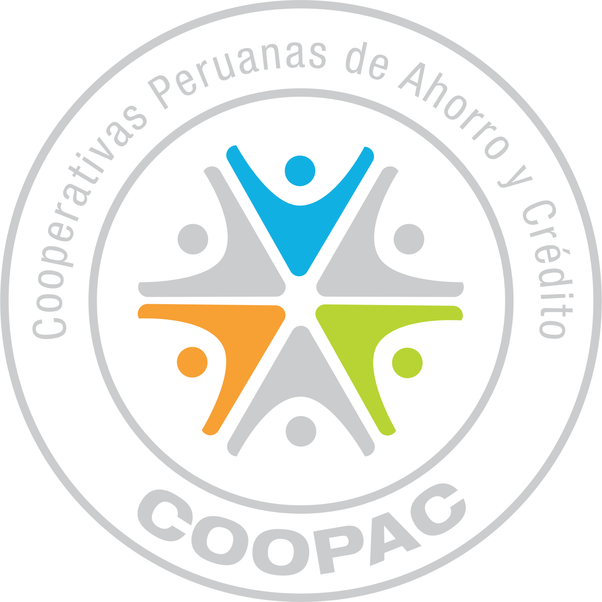

Ahorro
Define metas y fortalece hábitos que te ayuden a construir un ahorro sostenible.
EDUCACIÓN FINANCIERA DESDE EL MOVIMIENTO COOPERATIVO
Fortalece tus conocimientos para organizar tus finanzas y tomar decisiones más informadas en cada etapa de tu vida.
UNA INICIATIVA QUE PUEDE SEGUIR CRECIENDO
FENACREP, a través de su Escuela de Educación y Formación Cooperativa, articula esta iniciativa con las cooperativas que cuentan con Aula Virtual para acercar contenidos de educación financiera a sus socios y comunidades.
La Semana de la Educación Financiera es el punto de partida de esta campaña, pero la plataforma está concebida para acompañar nuevas acciones de educación financiera durante el año.
CURSO VIRTUAL
Un curso autogestionado de la Escuela de Educación y Formación Cooperativa para desarrollar conocimientos esenciales sobre ahorro, presupuesto, crédito y cooperativismo.
CUATRO TEMAS PARA TU DÍA A DÍA
Define metas y fortalece hábitos que te ayuden a construir un ahorro sostenible.
Ordena tus ingresos y gastos para entender mejor cómo utilizas tu dinero.
Comprende cómo funciona el crédito y qué considerar antes de asumir una obligación.
Conoce las características, valores y principios del modelo cooperativo.

ENCUENTRA TU COOPERATIVA
Selecciona la COOPAC a través de la cual deseas acceder al curso. La solicitud será gestionada directamente desde su Aula Virtual.
Al continuar, serás dirigido al formulario de solicitud de inscripción de la cooperativa seleccionada.
MOVIMIENTO COOPERATIVO
Este espacio reconoce a las COOPAC que ponen a disposición de sus socios y comunidades su Aula Virtual para participar de la iniciativa.